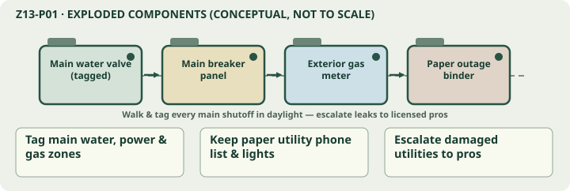

Z13-P01 · Home survival and utilities · New manuscript
Map residential utility shutoffs and household outage roles before storms hit
Ensure every adult in the home can locate main shutoffs, emergency contacts, and outage checklists in the dark without guesswork.
When it applies · Single-family homes, duplexes, rentals, and cabins preparing for electrical, gas, or water interruptions.
Equipment · Printed household utility map, waterproof tag labels on valves/panels, flashlight, and offline utility phone list.

Actions
- Walk the home in daylight with all capable household members to locate and clearly tag the main electrical breaker, main water shutoff valve, exterior gas meter location (shut off ONLY per utility/emergency guidance), and sump/well breaker switches.[U14, U08, U11]
- Write down electric, gas, water, propane, and local emergency numbers on paper kept near flashlights—remembering Wi-Fi routers and online billing portals fail during blackouts.[U14, U16]
- Assign explicit outage roles (checking CO/smoke alarms, monitoring fridge/freezer times, checking vulnerable neighbors, and tracking battery charge) before severe weather arrives.[U14, U12, T11]
Failure recognition · Searching a dark freezing basement for the main water shutoff while a burst pipe floods the floor.[U14, U08]
Verify · Confirm shutoff locations are tagged, paper utility phone numbers sit with working flashlights, and every adult knows the plan.[U14, ED]
Stop or change course · Never attempt to disassemble electrical panels or turn gas service back on yourself; escalate damaged or leaking utilities directly to licensed utilities.[U11, U02]
Evidence and editorial notes
- T11 · FEMA / Ready.gov · Make a Plan (current web edition)
- Section: Make a Plan > Family Emergency Communication Plan · Conditions: Households and traveling groups preparing for disruptions
Support: Record out-of-area contacts, local meeting places, medical/allergy summaries, and alternate communication channels (text vs voice) in paper and offline formats; practice the plan periodically.
Limitations: Cellular networks often congest during disasters while SMS or out-of-area contacts may still connect. · Conflicting evidence: None; complements outdoor trip-plan cards.
Editorial note: Anchors emergency communication protocols and group contingency plans. · Specialist reviewer: Emergency management and communications
Primary source · checked 2026-11-24 - U02 · FEMA / Ready.gov · Power Outages (current web edition)
- Section: Power Outages > Portable Generator Safe Connection and Isolation · Conditions: Homeowners using portable generators during electrical outages
Support: Run generators only outdoors at least 20 feet from doors, windows, and vents; plug appliances directly into heavy-duty outdoor-rated cords OR use a licensed-electrician-installed transfer switch—never backfeed into a wall outlet.
Limitations: Backfeeding energizes utility lines, risking electrocution of utility linemen and household electrical fires. · Conflicting evidence: Directly counters deadly "suicide cord" backfeeding myths.
Editorial note: Core electrical isolation boundary across Z13 generator cards. · Specialist reviewer: Licensed electrician and fire safety
Primary source · checked 2026-11-24 - U08 · FEMA / Ready.gov · Water Storage and Emergency Supply (current web edition)
- Section: Water > Emergency Household Supply, Shutoff, and Alternate Indoor Sources · Conditions: Household plumbing disruptions, water-main breaks, or winter freeze outages
Support: Store at least 1 gallon per person per day for several days (two weeks where feasible for extended outages), know the main water shutoff valve location, and recognize clean indoor water-heater reserve boundaries only after shutting off power/gas and confirming supply safety.
Limitations: Never use water from radiators, hot-water boilers, or chemically treated toilet tanks for drinking. · Conflicting evidence: None; complements CDC-S (W06, W14).
Editorial note: Covers household water shutoffs, pipe-freeze prevention, and safe indoor reserves. · Specialist reviewer: Plumbing safety and drinking-water public health
Primary source · checked 2026-11-24 - U11 · FEMA / Ready.gov · Hazardous Materials Incidents (current web edition)
- Section: Natural Gas Leaks, Fuel Odors, and Utility Shutoff Boundaries · Conditions: Suspected household natural gas, propane, or fuel-oil leak
Support: If you smell rotten eggs/mercaptan or hear hissing near gas lines, leave the building immediately without toggling light switches or using phones inside, and call 911 and the gas utility from outside; never turn gas back on yourself.
Limitations: Only the gas utility or licensed technician may restore shut-off gas service and relight pilot systems safely. · Conflicting evidence: None; critical residential utility stop condition.
Editorial note: Establishes strict utility-leak evacuation and licensed restoration gates. · Specialist reviewer: Gas utility safety and fire service
Primary source · checked 2026-11-24 - U12 · CPSC · CO Alarms (current web edition)
- Section: Home Alarms > Smoke, Carbon Monoxide, and Battery Backup Readiness · Conditions: Occupied residences with fuel-burning furnaces, water heaters, attached garages, or outage generators
Support: Maintain interconnected or battery-backed CO and smoke alarms on every floor and outside sleeping rooms, replace expired sensors on schedule, and keep exterior furnace/dryer/exhaust vents clear of drifting snow.
Limitations: Blocked high-efficiency PVC furnace intake/exhaust pipes in heavy snow can force CO back indoors or lock out heating systems. · Conflicting evidence: None; integrates with C09 and Z13-R03.
Editorial note: Connects winter snow-drift vent inspection to household CO prevention. · Specialist reviewer: Carbon monoxide safety and residential HVAC
Primary source · checked 2026-11-24 - U14 · FEMA / Ready.gov · Make a Plan (current web edition)
- Section: Household Emergency Planning, Utility Maps, and Outage Checklists · Conditions: Pre-outage residential documentation and household drills
Support: Document main water, electrical panel, and gas shutoff locations, utility outage phone numbers, medical power registries, and neighborhood check-in networks on paper before storms hit.
Limitations: Utility medical-priority lists do not guarantee uninterrupted power during major ice storms or grid blackouts. · Conflicting evidence: None; bridges Z01 planning with Z13 household infrastructure.
Editorial note: Grounds household utility mapping and vulnerable-occupant contingencies. · Specialist reviewer: Emergency management and accessibility specialist
Primary source · checked 2026-11-24 - U16 · FEMA / Ready.gov · Emergency Alerts (current web edition)
- Section: Household Emergency Communications During Grid and Cell Outages · Conditions: Residential power, internet, and cellular tower disruptions
Support: Maintain a battery/crank NOAA Weather Radio, spare power banks, car-charger backups, written contact cards, and local AM/FM broadcast station lists so warnings and utility restoration updates remain accessible without Wi-Fi or cell data.
Limitations: Cordless landline handsets and VoIP routers fail immediately when house power drops unless separately backed up. · Conflicting evidence: None; links Z13 household comms to Z15 disaster alerts.
Editorial note: Grounds home communications continuity during extended blackouts. · Specialist reviewer: Emergency communications specialist
Primary source · checked 2026-11-24
Source lineage · FEMA Ready.gov Make a Plan and Power Outages; new manuscript · Classification · New manuscript.